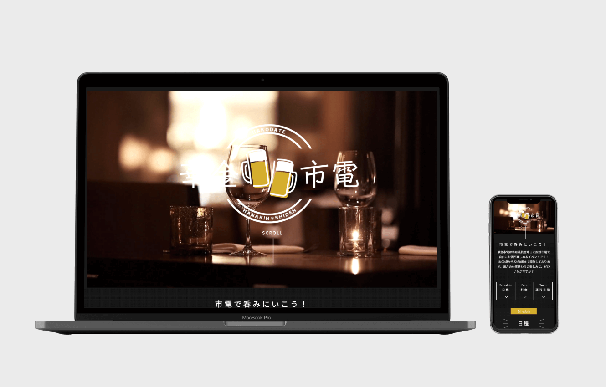

華金市電
Mockup Material：https://www.anthonyboyd.graphics/mockups/front-view-iphone-x-and-macbook-pro-mockup/
「華金市電」とは？
毎月最終金曜日に函館市電で自由にお酒が楽しむことができるイベントです。時間は18:00〜22:30で、1枚500円×5枚の2500円のチケットを1口として複数枚購入できます。お酒やおつまみなどを購入する際にそこから値段の分チケットを切り取って使用します。
毎月の仕事終わりの楽しみに、市電に乗りながらお酒を楽しむ、非日常を味わえます。
詳しい担当箇所
企画立案（担当）
↓
情報収集（担当）
↓
内容詳細決定（担当）
↓
特設webサイト制作（担当）
↓
プレゼン発表
企画立案
「函館市電を盛り上げる」かつ「実現可能」という点を踏まえてグループ内でアイディアを出し合いました。その際に、他の市でも行っている「居酒屋市電」などの例を元に函館でも市電でお酒が飲めるイベントを行おうという方向性で決定しました。
情報収集・内容詳細決定
実際に実現可能なのか、料金はどのように設定すれば良いか、開催する時間はどうすれば良いかなどを、回を重ねてメンバーと話し合って詰めていきました。
特設webサイト制作
実際に開催されることを想像し、特設webサイトを制作しました。WF・素材集め・デザイン・コーディングを全て1人で行いました。ワクワク感を伝えるためにFVには動画を使用し、スマホで見ることも想定しレスポンシブ対応も行いました。